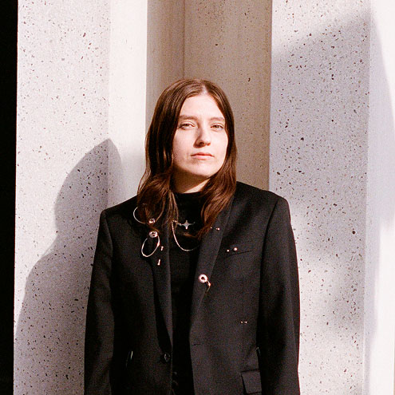

My Toxic Trait is I believe the Good is Inevitable - 2025
“My Toxic Trait Is I Believe The Good Is Inevitable” is a hybrid between sculpture, painting and video game. Embedded in a rebar steel frame is a 5:4 LCD monitor playing a walkthrough of a video game made by the artist. From the metal frame four bars are stretching diagonally outward and forward into space, forming a concave rectangle. Between them, four pieces of painted canvas are stretched, the grommeted edges are threaded to the metal bars with silver audio cable. The structure resembles the shape of a solar sail, a propulsion technology that pushes spacecraft through space by reflecting light particles emitted by the Sun. The four canvases form one painted image that in its digital form serves as the map for the digital landscape on the screen.
This artwork rejects longtermist ideas that frame capitalist over-extraction of our planet as unavoidable and position the abandonment of Earth as a necessary step toward a future of off-world survival on other planets or space stations. These ideas often justify present harm in the name of distant optimization. This work is inverting these concepts, it draws on the idea of a future where we don't over extract and abandon Earth, but return to Earth as our destination, informed by Donna Haraway's Staying with the Trouble and its insistence on remaining accountable to the present. A positive and sustainable relationship with the planet becomes the inevitable future.
The work also engages with contemporary thoughts and practices connected to hope and spirituality toward our environment, as well as environmental phenomena, petroglyphs and ancient landscape art. There are three objects introduced in the game: The orb is seen as a source of energy tightly related to earthly phenomena tied to electromagnetic lines in the earth's crust. Crop circles and related appearances are unlinked from narratives of extraterrestrial intelligence and reinterpreted as a form of endoterrestrial communication from the planet itself. The earthbound angel is conceived as a wanderer beyond space and time, and companion to humanity, a group of guardian angels to the planet. The unknowable is an invisible power exerted by the earth over millennia that can be perceived when interacting with ancient landscapes.

Naomi Sam is an interdisciplinary artist from Vienna & Hamburg, based in Los Angeles. Her work spans installation, sculpture, painting, animation and video game, combining physical and digital elements into hybrid objects. Her practice creates speculative spheres for collective imagining of posthuman futures, through wordbuilding and play, exploring relationships between bodies, environments, landscapes, nature, technology, and hope in times of hypercapitalism. Her work reflects on relics of the Anthropocene, posthumanism, environmentalism, digital alchemy, and spirituality and encourages attentiveness to nonhuman voices and alternative temporalities, and the planet. She holds an MFA in Art and Technology from the California Institute of the Arts where she currently teaches in the Integrated Media specialization.